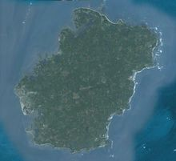

历史
十三世纪70年代，中国历史发生重大变化，执政长达319年的宋朝灭亡，元朝建立，宣告五代以来南北长期对峙的局面结束，一个多民族统一的中国形成。
宋朝历史上分北宋和南宋。湛江硇洲岛曾是南宋末代王朝两个“真龙天子”避元军追赶的逃难地。一个驾崩，葬于硇洲；一个登基，建都硇洲，见证了南宋王朝的覆灭，在中国历史记下宋元两朝交替最后一笔。原来默默无闻的硇洲，也因此备受史学界关注。
十三世纪70年代，中国历史发生重大变化，执政长达319年的宋朝灭亡，元朝建立，宣告五代以来南北长期对峙的局面结束，一个多民族统一的中国形成。
宋朝历史上分北宋和南宋。湛江硇洲岛曾是南宋末代王朝两个“真龙天子”避元军追赶的逃难地。一个驾崩，葬于硇洲；一个登基，建都硇洲，见证了南宋王朝的覆灭，在中国历史记下宋元两朝交替最后一笔。原来默默无闻的硇洲，也因此备受史学界关注。
硇州岛人杰地灵，物产丰富。它是南海大陆架的一个肥沃渔场，盛产名闻世界的硇洲鲍鱼、龙虾等名贵水产。其南国风光饮誉中外。
门票价格：免费
交通指南：可以到湛江东简镇码头坐船过去。或者在霞山区工农路汽车总站（或东堤客运站）坐开往东海岛东南码头的中巴车，在东南码头坐渡轮过海抵硇洲岛。还可以在霞山工农市场门口打的直达东南码头，价位是15元/人，客满即走。渡轮过渡时间为35分钟左右
耸立在硇洲岛马鞍山上的硇洲灯塔，是世界仅有的二座水晶磨镜灯塔之一，也是世界著名的三大灯塔之一。另两座是伦敦和好望角的灯塔